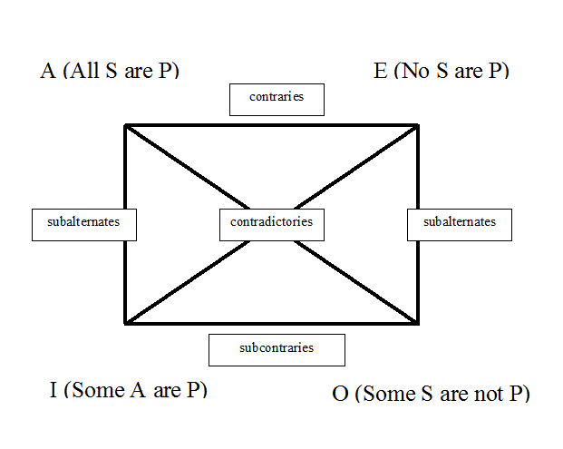
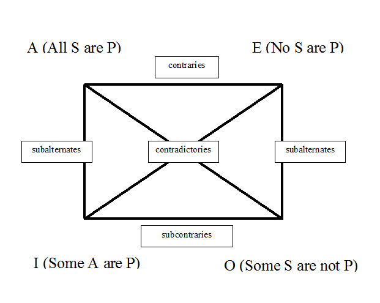
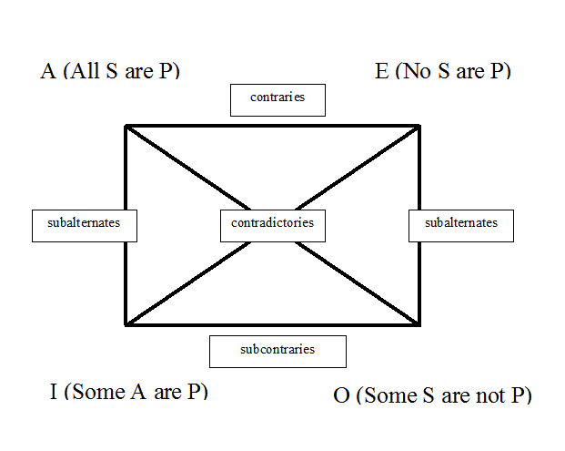

Images
 

Aristotle (384–322 B.C.E.) numbers among the greatest philosophers of all time. Judged solely in terms of his philosophical influence, only Plato is his peer: Aristotle’s works shaped centuries of philosophy from Late Antiquity through the Renaissance, and even today continue to be studied with keen, non-antiquarian interest. A prodigious researcher and writer, Aristotle left a great body of work, perhaps numbering as many as two-hundred treatises, from which approximately thirty-one survive.[1] His extant writings span a wide range of disciplines, from logic, metaphysics and philosophy of mind, through ethics, political theory, aesthetics and rhetoric, and into such primarily non-philosophical fields as empirical biology, where he excelled at detailed plant and animal observation and description. In all these areas, Aristotle’s theories have provided illumination, met with resistance, sparked debate, and generally stimulated the sustained interest of an abiding readership.
Because of its wide range and its remoteness in time, Aristotle’s philosophy defies easy encapsulation. The long history of interpretation and appropriation of Aristotelian texts and themes—spanning over two millennia and comprising philosophers working within a variety of religious and secular traditions—has rendered even basic points of interpretation controversial. The set of entries on Aristotle in this site addresses this situation by proceeding in three tiers. First, the present, general entry offers a brief account of Aristotle’s life and characterizes his central philosophical commitments, highlighting his most distinctive methods and most influential achievements.[2] Second are General Topics, which offer detailed introductions to the main areas of Aristotle’s philosophical activity. Finally, there follow Special Topics, which investigate in greater detail more narrowly focused issues, especially those of central concern in recent Aristotelian scholarship.
This information is directly from this article
Philosophical Area |
Plato |
Aristotle |
|---|---|---|
Reality (Metaphysics) |
True reality exists in eternal, perfect Forms; the physical world is a mere shadow. | Reality is in the tangible, physical world; forms exist within objects (immanent). |
Knowledge (Epistemology) |
Innate; recalled through reason and reflection, distrusting senses. | Acquired through sensory experience, observation, and empirical study |
Ethics/Purpose |
Attain the Form of the Good; the perfect, transcendent ideal | Achieve Eudaimonia (flourishing) through virtuous living and practical wisdom. |
Politics |
Ideal utopian state ruled by philosopher-kings (those who know the Forms). | Constitutional government, balance, focusing on the middle class and analyzing existing systems. |
Approach |
Abstract, deductive, rationalistic. | Concrete, empirical, scientific. |
